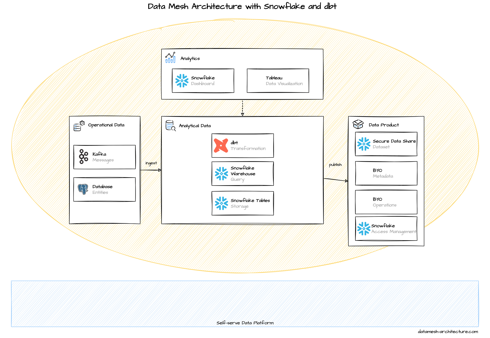

Snowflake is a popular cloud-based data warehouse. A Snowflake account can run on AWS, Google Cloud, or Azure.
Snowflake can be compared approximately with Google BigQuery and also has a serverless pricing model. Internally, Snowflake uses cost-efficient object storage services (such as S3) to store data and compute instances to execute queries and DML operations. For the users, the key concepts are traditional tables and views along with SQL queries.
Teams and data can be organized by these layers:
- Organization Account
- Account
- Databases
- Schemas
- Tables, Views, Sequence, Stages
An easy way to start would be a single account per environment for all teams and one logical database per team, but managing security roles can quickly become complex, as usually one role per data product will be required. In terms of governance and security, a recommended option is that each domain team has their own Snowflake account, one per environment and using Secure Data Sharing to give others access to data products.

Data products can be published and shared with other Snowflake accounts through Secure Data Sharing. A domain team defines a secure view for the desired data set and gives other accounts within the same cloud provider`s region read-access to the data set. As a share cannot be granted to an organization account, an automated script (e.g., with Terraform) should be considered to make data sets available company-wide, if desired.

Building models with dbt

Visualization

Snowflake provides no catalog do discover and govern published data products. Being one of the most data warehouses, there is a good integration for all third-party data catalog solutions, such as Select Star, Alation